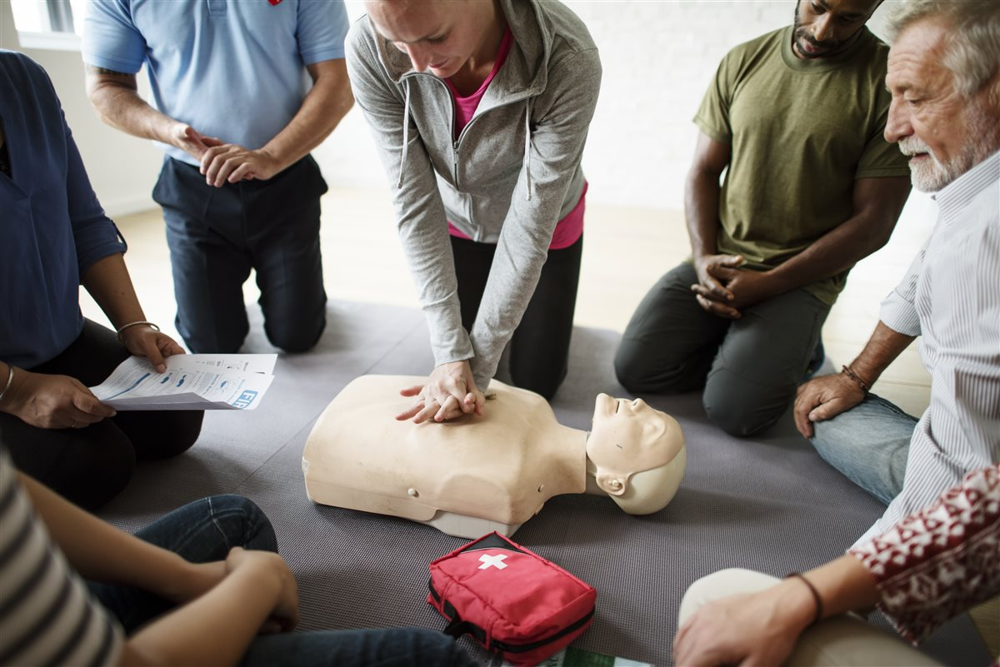
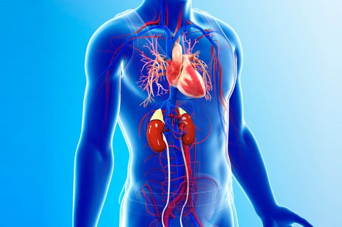

Consigli di prevenzione, novità dalla struttura e approfondimenti dalle nostre nove specialistiche.

Le novità normative 2025-2026 e le Linee Guida ERC: perché la formazione al primo soccorso va mantenuta sempre aggiornata.

Perché prevenire le malattie cardiovascolari oggi significa guardare oltre il cuore, con un percorso che unisce cardiologia, endocrinologia e nutrizionistica.
Una guida pratica su quando e perché sottoporsi a una visita cardiologica di prevenzione.